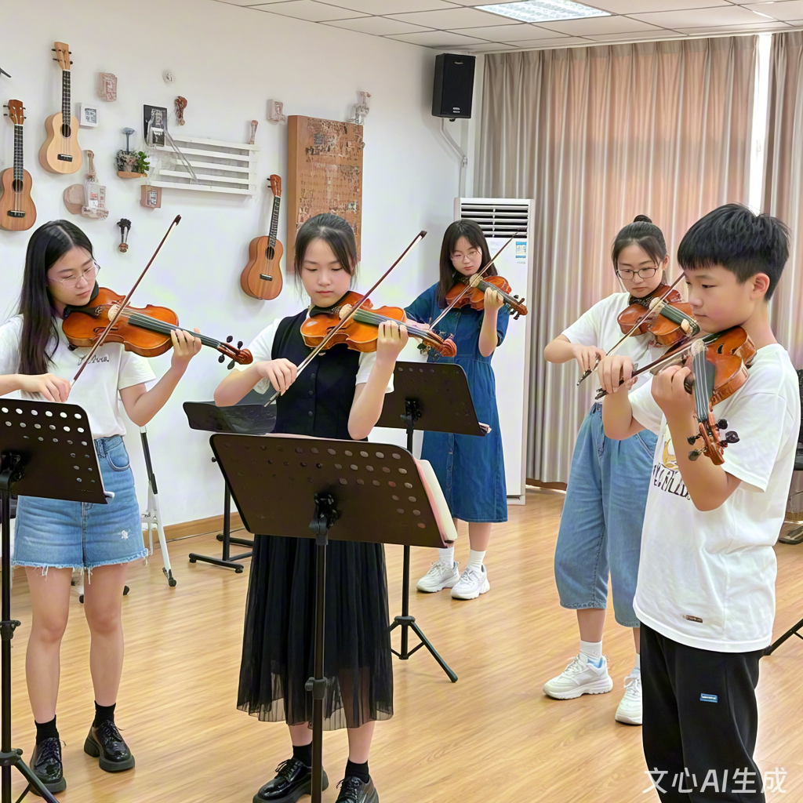

小提琴社团招新网站
社团简介
活动安排
风采展示
社员故事
在线报名
一、社团简介
小提琴社团简介：弦动心声，共谱华章
在音乐的浩瀚星空中，小提琴以其独特的音色魅力与深厚的文化底蕴，成为连接心灵、跨越时空的桥梁。自诞生以来，小提琴便以其悠扬婉转、深情细腻的旋律，触动着无数人的心弦，成为古典音乐乃至现代音乐中不可或缺的灵魂乐器。在这样一个充满艺术氛围与激情碰撞的时代，我们的小提琴社团应运而生，旨在汇聚一群热爱小提琴、渴望在琴弦上探索无限可能的音乐爱好者，共同编织一场场关于美的盛宴。
一、社团成立背景与宗旨
小提琴社团成立于2020年，由一群志同道合的小提琴爱好者发起，旨在为成员提供一个专业、温馨、开放的学习与交流平台。我们相信，音乐无国界，艺术共分享。社团不仅致力于提升成员的小提琴演奏技巧，更强调通过音乐表达情感、传递文化，促进成员间的相互理解与友谊，共同营造一个和谐、积极向上的音乐社区。社团的宗旨是：“以琴会友，以乐传情，探索音乐之美，共享艺术人生。”
二、师资力量与教学体系
社团拥有专业的师资团队，其中包括多位具有丰富教学经验和舞台表演经历的小提琴教师。他们不仅具备扎实的专业功底，更懂得如何因材施教，激发每位成员的学习兴趣与潜能。教学体系上，我们采用个性化教学计划，根据成员的基础水平、兴趣偏好及发展目标，量身定制课程，涵盖基础技法训练、曲目解析、音乐理论、舞台表现力培养等多个方面。同时，定期举办大师班、工作坊，邀请国内外知名小提琴家进行面对面指导，拓宽成员的视野，提升艺术修养。
三、活动与交流
社团活动丰富多彩，既有定期的内部排练、小型音乐会，也有面向公众的大型演出，如新年音乐会、夏季音乐节等，为成员提供展示自我、挑战自我的舞台。此外，社团还积极参与国内外音乐交流活动，与国内外其他音乐团体建立友好关系，组织成员参加国际音乐比赛、音乐节，促进文化交流与融合。通过这些活动，成员们不仅能够提升演奏技能，还能在更广阔的舞台上展现中国青少年的音乐风采，增进国际理解与友谊。
四、社团文化与团队精神
小提琴社团注重培养成员的团队合作精神与责任感。在排练与演出中，每个成员都是不可或缺的一环，需要相互倾听、默契配合，共同完成每一次的音乐呈现。这种经历不仅锻炼了成员的协作能力，也加深了彼此之间的情感联系，形成了独特的社团文化——团结、进取、创新、包容。我们鼓励成员勇于表达自我，尊重每个人的独特性与创造力，共同营造一个开放、包容、积极向上的学习氛围。
五、未来展望
展望未来，小提琴社团将继续秉承初心，不断创新与发展。我们将进一步扩大师资力量，优化教学体系，引入更多现代科技手段，如在线教学平台、智能音乐分析工具等，提升教学质量与效率。同时，加强与国内外音乐机构的合作，拓宽交流渠道，为成员提供更多展示与学习的机会。我们相信，通过不懈努力，小提琴社团将成为培养音乐人才、传播音乐文化的重要基地，让更多人感受到小提琴音乐的魅力，共同谱写属于我们的音乐华章。
在小提琴社团这片音乐的沃土上，每一根琴弦都承载着梦想与希望，每一次演奏都是心灵的对话。让我们携手并进，用琴弦编织梦想，用音乐点亮生活，共同创造更加美好的未来。
二、活动安排
| 小提琴社 2025 年春季学期活动安排表 |
|---|
| 活动名称 | 活动时间 | 活动地点 | 负责人 |
|---|
| 新成员见面会 | 3月第2周 周五晚 | 学生活动中心 音乐教室 201 | 张强 |
| 小提琴基础教学公开课 | 3月第3周 周六下午 | 李娜 |
| 校园草地弹唱会 | 4 月第 2 周 周日 | 操场东侧草坪 | 王浩 |
| 期末专场音乐会 | 6 月第 1 周 周六晚 | 大学生活动中心 大礼堂 | 刘芳 |
三、风采展示

演奏视频